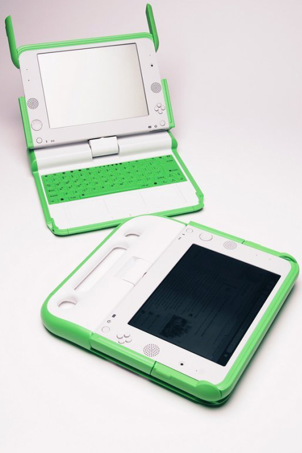

حول جهاز الكمبيوتر

جهاز XO من OLPC
ماهو حهاز الكمبيوتر؟
الكمبيوتر يحتوي على بيانات ويقوم بالاستجابة الى اوامر المستخدم. يستعمل الكمبيوتر كأداة للوصول وتبادل المعرفة.يمكن استعماله كمدرسة او كلعبة، وهو يوفر وسيلة للتواصل مع الآخرين.
لأن الكمبيوتر يستقبل البيانات ويمكن برمجته، هذا يجعله يكون جهاز متعدد الاستعمالات.العديد من الناس يستعملون الكمبيوتر للكتابة، للقيام بحسابات رياضية، للرسم، للعب ألعاب، لتسجيل صوت وصور، للتواصل مع الآخرين، للقراءة وللتعلم. استعمال جهازك محدود فقط بالنشاطات التي تستعملها وبخيالك.
ماذا يمكن لجهاز XO أن يقوم به؟
يمكن للجهاز من أن يسجل مجموعة كبيرة من الكتب، فيديو، وصور.كما يمكنه لعب وانشاء موسيقى.يحتوي على برامج يمكنك استعمالها لتعلم الرياضيات، اللعب، ورسم صور، والتواصل مع الآخرين. تتحكم في جهاز XO عن طريق لوحة التحكم، لوحة المفاتيح، الميكروفون او باستعمال الكاميرا.
كيف يقوم الجهاز بذلك؟
الكمبيوتر مكون من أجزاء التي تشتغل لتنفيذ مهمة محددة التي تقوم باعطائها له عبر التفاعل معه. انظر صفحة wiki.laptop.org/go/Disassembly لصور الأجزاء المكونة لجهاز XO.
يمكنك استعمال جهازك XO لإكتشاف المزيد عن طريقة عمل الكمبيوتر وتعلم استعمالاته البسيطة، وتعلم المزيد عن الجهاز والبرامج وكيفية اشتغالها ككل.